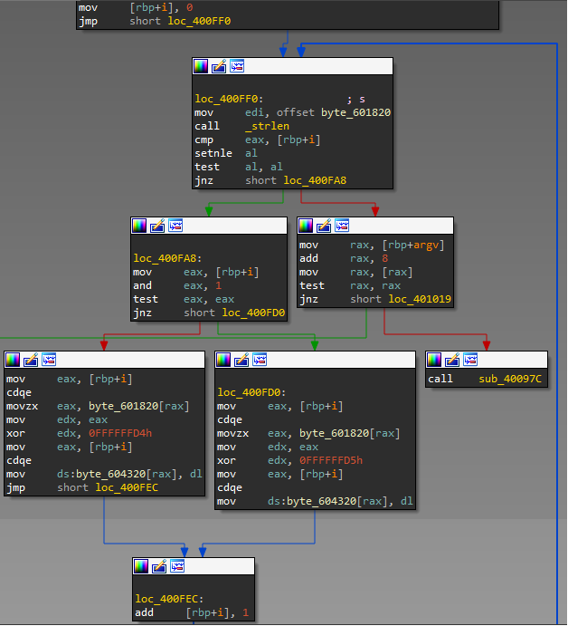

Description
Download this file and find the flag.
Solution
After unziping this file we found that it's x64 ELF. At the main function we see some buffer dexoring:

Lets dexor it and save to file (IDA command line with idapython used):
s = ''
for i in range(10952):
b = Byte(0x601820+i)
if b==0:
break
s += chr(b ^ (0xd4 + i%2))
open('sat.txt','w').write(s)
The decrypted buffer seems to be a condition for some binary array (full dexored buffer avaliable here):
( a[253] | ! a[218] ) & ( ! a[92] | ! a[46] ) & ( ! a[2] | ! a[285] ) & ( ! a[275] | ! a[256] ) ...
so we can suggest that this array is a binary representation of the flag (295 bits ~ 37 bytes) and everything we need is to find such array a that this condition is true.
Well, this type of problem is well-known as SAT. There are many different solvers for such things in the Internet. We used minisat.
Firstly, we need to convert all conditions to MiniSAT Input Format. You can write short script for that but we did few 'Replace with' at text editor.
Notice that array element with zero index should be substituted by non-zero index because of MiniSAT input format (0 means and of line). We changed 0 index to next after last one - 295. Now our SAT looks like needed and we can do:
$ minisat mysat.txt myout.txt ============================[ Problem Statistics ]============================= | | | Number of variables: 295 | | Number of clauses: 441 | | Parse time: 0.00 s | | Eliminated clauses: 0.00 Mb | | Simplification time: 0.00 s | | | ============================[ Search Statistics ]============================== | Conflicts | ORIGINAL | LEARNT | Progress | | | Vars Clauses Literals | Limit Clauses Lit/Cl | | =============================================================================== =============================================================================== restarts : 1 conflicts : 0 (0 /sec) decisions : 1 (0.00 % random) (467 /sec) propagations : 294 (137191 /sec) conflict literals : 0 ( nan % deleted) Memory used : 0.22 MB CPU time : 0.002143 s SATISFIABLE $ cat myout.txt SAT -1 -2 -3 -4 -5 6 -7 8 -9 10 -11 -12 13 14 -15 16 -17 -18 19 -20 -21 22 -23 24 -25 26 -27 -28 29 30 -31 32 -33 34 35 36 37 38 -39 -40 41 42 -43 -44 45 -46 -47 -48 49 50 -51 -52 -53 -54 -55 56 57 -58 -59 -60 -61 62 -63 -64 65 66 -67 68 69 -70 -71 -72 73 74 -75 76 -77 -78 -79 80 81 -82 -83 84 -85 86 -87 -88 89 90 91 -92 -93 94 -95 -96 97 98 -99 100 -101 102 -103 -104 105 106 -107 108 109 110 -111 112 113 -114 -115 -116 117 118 -119 -120 121 122 123 -124 -125 126 -127 -128 129 130 -131 132 133 -134 -135 -136 137 138 -139 -140 -141 142 -143 144 145 -146 -147 -148 -149 150 -151 -152 153 154 -155 -156 157 -158 -159 160 161 -162 -163 -164 165 -166 -167 168 169 -170 -171 172 -173 174 -175 176 177 -178 -179 -180 -181 182 -183 184 185 -186 -187 188 -189 190 -191 -192 193 194 195 -196 -197 198 -199 200 201 -202 -203 -204 205 -206 -207 208 209 -210 -211 -212 213 -214 -215 -216 217 218 -219 -220 221 -222 -223 -224 225 226 -227 -228 229 230 -231 -232 233 234 -235 -236 -237 -238 -239 240 241 -242 -243 -244 245 -246 -247 -248 249 250 -251 -252 253 254 -255 -256 257 258 -259 260 -261 262 -263 -264 265 266 -267 -268 -269 270 -271 272 273 -274 -275 -276 277 -278 -279 280 281 -282 -283 -284 285 286 -287 288 289 -290 -291 -292 -293 294 295 0
Nice, solution found. Try to convert in to some printable data:
>>> sol = '-1 -2 -3 -4 -5 6 -7 8 -9 10 -11 -12 13 14 -15 16 -17 -18 19 -20 -21 22 -23 24 -25 26 -27 -28 29 30 -31 32 -33 34 35 36 37 38 -39 -40 41 42 -43 -44 45 -46 -47 -48 49 50 -51 -52 -53 -54 -55 56 57 -58 -59 -60 -61 62 -63 -64 65 66 -67 68 69 -70 -71 -72 73 74 -75 76 -77 -78 -79 80 81 -82 -83 84 -85 86 -87 -88 89 90 91 -92 -93 94 -95 -96 97 98 -99 100 -101 102 -103 -104 105 106 -107 108 109 110 -111 112 113 -114 -115 -116 117 118 -119 -120 121 122 123 -124 -125 126 -127 -128 129 130 -131 132 133 -134 -135 -136 137 138 -139 -140 -141 142 -143 144 145 -146 -147 -148 -149 150 -151 -152 153 154 -155 -156 157 -158 -159 160 161 -162 -163 -164 165 -166 -167 168 169 -170 -171 172 -173 174 -175 176 177 -178 -179 -180 -181 182 -183 184 185 -186 -187 188 -189 190 -191 -192 193 194 195 -196 -197 198 -199 200 201 -202 -203 -204 205 -206 -207 208 209 -210 -211 -212 213 -214 -215 -216 217 218 -219 -220 221 -222 -223 -224 225 226 -227 -228 229 230 -231 -232 233 234 -235 -236 -237 -238 -239 240 241 -242 -243 -244 245 -246 -247 -248 249 250 -251 -252 253 254 -255 -256 257 258 -259 260 -261 262 -263 -264 265 266 -267 -268 -269 270 -271 272 273 -274 -275 -276 277 -278 -279 280 281 -282 -283 -284 285 286 -287 288 289 -290 -291 -292 -293 294 295'
>>> sol = sol.split(' ')
>>> res = ''
>>> for c in sol:
... if '-' in c: res += '0'
... else: res += '1'
...
>>> c
'295'
>>> res
'0000010101001101001001010100110101111100110010001100000110000100110110001101000110010100111001001101010011011101100011001110010011011000110001011000010011001001100010011001010110000101100101001110010110001001100010001100100011001100110000011000100011001100110101001100010110001001100011011000011'
>>> len(res)
295
>>> res = '0' + res[-1] + res[:-1] #move last to first (because [0] index) and add leading zero for padding
>>> hex(int(res, 2))[2:-1].decode('hex')
'ASIS_20a64e957c961a2beae9bb230b351bca'The flag is ASIS_20a64e957c961a2beae9bb230b351bca.
Sports Shoes | Women's Nike Air Force 1 Shadow trainers - Latest Releases , Ietp